Weldments
Solid Edge provides a set of commands that you can use to add weldment-specific data to an assembly or part file. For example, you can use material removal commands to prepare part faces for welding operations, add fillet and groove welds between parts, or label edges that require welding on the physical parts. You can also construct assembly features that represent post-weld machining operations.
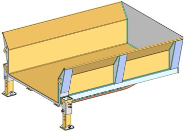
Before you can access the weldment-specific commands in the Assembly environment, you must specify that the assembly document is a weldment assembly.
If you want the weldment features to be contained in a separate part file, you can create a new part file in-place. In the assembly file, choose the Home tab→Assemble group→Create Part In-Place list→Create Part In-Place command. The weldment commands in the part environment are located on the Home tab→Solids group→Sweep list.
-
Specifying an assembly document is a Weldment assembly
Use the Weldment Assembly command to specify that the current assembly document is a weldment assembly. The Mark This Assembly as a Weldment option on the Weldment Assembly dialog box activates the weldment-specific commands in the Assembly environment. It also allows you to set other weldment properties such as the component material, bead material, weld bead color, weld bead density, and so forth.
You can set this option in an existing assembly document that contains parts and subassemblies, or in a new assembly document before you place parts. When creating a new document, you can also select the WELDMENT.ASM assembly template in which the weldment assembly options have already been set. You can also modify this template to customize it to meet your requirements.
-
Weldment assemblies in the Teamcenter-managed environment
Weldment features such as beads and fillets are recognized and recorded in the Teamcenter structure as Item Elements provided the Teamcenter Preference SEEC_Asm_Weldment_Feature_Type is defined.
Tip:See the Teamcenter Integration for Solid Edge (SEEC) Guide for Users and Administrators for details regarding Teamcenter preferences.
Each Solid Edge Weldment Feature is published to Teamcenter as a unique occurrence. For example, four weldment features created in Solid Edge display as four lines in Teamcenter. Weldment features are not subject to Reverse Property Synchronization or Reverse BOM Synchronization. Additionally, the Item Elements that store the weldment features are children of an explicit Item Revision and are not configured by Revision Rules. Item Elements are dependent children of an Item Revision in Teamcenter.
Preparing the components
When creating weldments, you often need to prepare the part surfaces first. For example, you may need to chamfer the edges where parts are welded together.
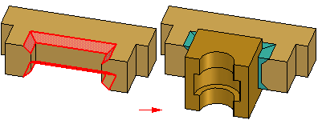
You can add surface preparation features in the assembly document or in the individual part documents, as discussed previously.
When making this decision, you may want to consider the manufacturing workflow your company uses for weldments, or the documentation requirements for weldments at your company.
For example, some companies create component part drawings for each part in a weldment assembly. If these drawings document the component parts after surface preparation, you should consider adding surface preparation features to the individual part documents.
-
Surface preparation in the assembly
You can use the commands on the Prep group to construct material removal features such as chamfers, cutouts, holes, and so forth in the assembly. When constructing profile-based features in an assembly, such as cutouts and holes, you can use the Select Parts Step to specify which parts in the weldment assembly the feature will modify.
Any parts that lie within the range of the profile and extent are automatically selected. Selecting the parts automatically saves considerable time when working with large assemblies. If you do not want to remove material from all the selected parts, you can hold down the CTRL key and click any highlighted parts to remove them from the select set.
Note:The Through Next option is not available when creating material removal features.
For weldment assemblies, you can construct most material removal features as assembly features or assembly-driven part features. Some material removal features are only available as assembly features. For example, chamfer features can only be constructed as assembly features.
For more information, see the Assembly-based Features Help topic.
-
Surface preparation in the part document
To add surface preparation features in the original part document, in-place activate the part document, then add the features you want.
Adding weld bead material and weld labels
The commands on the Weld Beads group allow you to add weld bead material to the weldment assembly. You can define colors for the weld bead material, which makes it easier to differentiate between weld bead material and the parts in the assembly.
You can construct fillet welds, groove welds, and stitch welds. You can also construct material addition features that represent weld bead material using protrusions, revolved protrusions and swept protrusions.
You can add weld labels to weld bead features you construct using the protrusion commands. You can also add a weld label to a part edge. See the Weld Label Features section for more details.
You are not required to add weld bead material to your weldments. When you add weld bead material, the bead volume is used when you calculate the physical properties of the weldment assembly.
The material addition commands in the Assembly environment work similar to the corresponding commands in the Part environment, but there are some important differences. Open profiles are not allowed, and when two protrusions intersect, they are not combined into one solid body.
The weld bead features you construct are not combined into the solid bodies of the parts they touch. These features are similar to the parts in an assembly, as they are separate solid bodies and are not combined with the parts in the weldment assembly.
-
Weld bead material color control
You use the Color Manager command to control the colors used for weld bead material. You can also use the Weldment Assembly command to set the weld bead color.
Weld bead features constructed using material addition features are placed using the Construction color. Weld bead features constructed using fillet weld, groove weld, and stitch weld features are placed using the Weld Beads color.
If you set these options to two different colors, it makes it easier to determine which features have weld symbol information available. You can use the weld symbol information in the Draft environment.
If you use the Label Weld command, discussed later, to add weld symbol information to an edge on a material addition feature, the color of the feature changes to the Weld Beads color. This indicates that weld symbol information has been added.
-
Fillet weld features
The Fillet Weld command adds weld bead material based on two sets of surfaces you define.

Each set can contain one or more surfaces, and the surfaces are not required to be connected to one another. The surface sets do not need to intersect one another, but the first set should be perpendicular or nearly perpendicular to the second set. The Fillet Weld Options dialog box allows you to define the fillet weld characteristics you want. For example, you can define the size and shape of the fillet by specifying the setback distance properties.
You can also define the weld symbol characteristics for the fillet weld. Fillet weld features display in the active Construction color.
-
Groove weld features
The Groove Weld command adds weld bead material between parts that have gaps between the welded faces.

To construct a groove weld feature, you must define a set of base faces (A) and target faces (B). For some groove weld features, this is all the input that is required.

Other situations require that you define a set of target edges. The edges you select are used to define the path for the feature, similar to how a lofted feature is defined.
-
Material addition features
When an assembly has been marked as a weldment, you can also define weld bead material using the material addition commands. You can construct protrusions, revolved protrusions, and swept protrusions to define weld bead material. This can be useful for constructing backing welds, plug or slot welds, or welds that require a specifically-shaped profile that cannot be constructed using a fillet or groove weld.
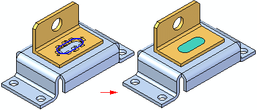
-
Label weld features
You can use the Label Weld command to label the edges you want welded together. The Label Weld Options dialog box allows you to define the weld symbol attributes you want. The edges you label with the Label Weld command display in the Construction color. You can also label weld bead features you construct using the material addition commands.
When you add a weld label to a material addition feature, the color of the feature changes to the Weld Beads color. This color change makes it easier for you to see which material addition features still require weld label attributes.
The Label Weld command will also compute the bead volume for physical properties calculations. When you define the cross section area of the weld in the Weld Symbol Properties dialog box, the length of the labeled edges and the cross section area are used to compute the bead volume.
Note:The Fillet Weld, Groove Weld, and Label Weld commands do not display a weld symbol in the Assembly environment. You can use the Tie To Geometry option available with the Weld Symbol command in the Draft environment to retrieve the weld symbol attributes from the assembly when adding weld symbols to the drawing.
-
Stitch weld features
You can use the Stitch Weld command to modify an existing fillet weld, groove weld, or a weld bead protrusion to create an intermittent weld.
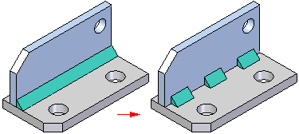
When working with a weld bead protrusion, you must first label the protrusion as a weld bead with the Label Weld command. You cannot use the Stitch Weld command on a part edge on which you added a weld label.
When you create a stitch weld feature, you first select a weld path, which can be the root edge of a fillet weld, or the edge of the weld bead protrusion on which you added the weld label. After you select the path, you select the start end of the stitch weld. You can use the Stitch Option list on the command bar or the Stitch Weld Options dialog box to specify the stitch definition option you want. The options are Stitch, Stitch + Offsets, and Offsets Only.
You can also use the Stitch Weld Options dialog box to define the stitch weld properties. For example, when you set the Stitch + Offsets option, you must also specify the start offset length (A), bead length (B), gap length (C), and end offset length (D) on the Stitch Weld Options dialog box.
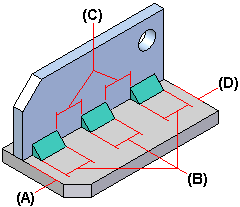
Post-weld machining
You can also define post-weld material removal features, such as cutouts, holes, threaded features and so forth using the commands on the Prep group. This approach duplicates how many weld features are added to the actual components. For example, some features are added after welding due to warpage and accuracy considerations.
You can use the Select Parts Step to specify which parts the feature will modify. The material removal features can also be used to remove weld bead material, such as from a fillet weld or a protrusion.
Patterning features
The Mirror Assembly Feature command allows you to create patterns of assembly features and weld bead material. Although these commands work similar to the corresponding commands in the Part and Sheet Metal environments, some special rules apply:
-
When patterning material removal features, you can use either the Fast or Smart option, but if the pattern feature encounters different surfaces than the original feature, you must use the Smart option.
-
When patterning weld bead material, you always use the Fast option. Because weld bead material does not interact with the surrounding parts, the Smart option is not required.
Documenting the stages of a weldment assembly
Some companies want to document the process-specific stages an assembly goes through as the components are processed into a weldment assembly:
-
Component Stage
-
Surface Preparation and Weld Bead Stage
-
Post-Weld Machining Stage
If you need to create unique, separate documents for these stages, you can consider the following workflow.
-
Stage 1:
Create an assembly document that collects all the components for the weldment. For the purposes of this example, it is named: Asm1-C.asm.
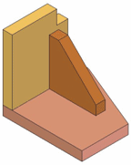
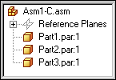
-
Stage 2:
Place Asm1-C.asm into a new assembly, mark the assembly as a weldment, and create the features that reflect surface preparation machining and weld bead features. Name that assembly: Asm1-W.asm.
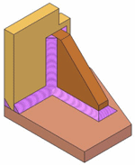
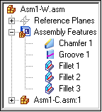
-
Stage 3:
Place Asm1-W.asm into another new assembly, and add the post-weld machining features. Name that assembly: Asm1-M.asm.
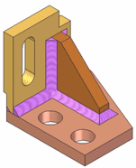
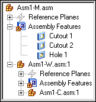
The completed data set allows you to segregate the features required for each weldment stage in separate assembly documents. This approach can also make it easier if you need to create separate drawing documents for each weldment stage.
Displaying weld bead color and texture in a shaded model view
The Weld Beads option on the Color Manager dialog box allows you to define a face style for weld beads. Its default value is set to a style named Weld Bead. The Textures option on the Rendering tab of the View Overrides dialog box supports photorealistic display of weld beads when you use the Weld Bead face style.
A weldbead.jpg file is delivered to the Program Files\Siemens\Solid Edge 2023\Images\Textures\Other folder, which you can also use to create your own weld bead styles to display texture. (You can make adjustments to the display characteristics of the Weld Bead style, and any other face style using the Styles command.)
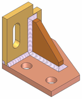
How do I
Construct a fillet weldConstruct a stitch weld
Construct a groove weld
Label a weld
Insert a weldment in an Assembly
Create a Weldment Assembly
Learn more
Creating drawings of weldment assembliesLook up more details
Fillet Weld commandFillet Weld command bar
Fillet Weld Options dialog box
Groove Weld command
Groove Weld command bar
Groove Weld Options dialog box
Label Weld command
Label Weld command bar
Label Weld Options dialog box
Stitch Weld command
Stitch Weld command bar
Stitch Weld Options Dialog Box
Insert Weldment command
Insert Weldment command bar
Weldment Parameters dialog box
Weldment Assembly command
Weldment Assembly Dialog Box
Weldment File Type dialog box